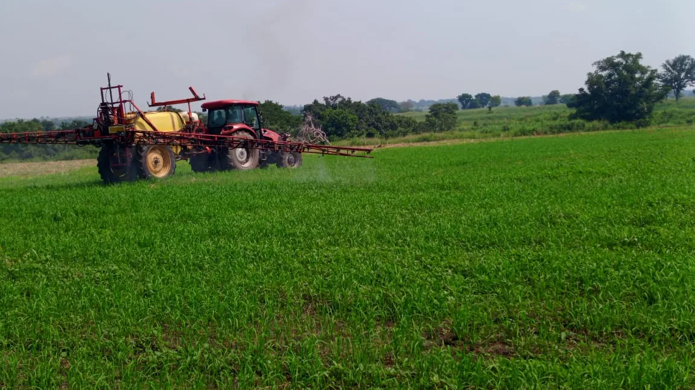

Sorghum · Sorghum bicolor
Sorghum
A drought-tolerant cereal grown across both of Normah's growing seasons, for regional and export trade.
Season AEarly Mar–Jun
Season BJul–Dec
Grown at Normah
Sorghum's tolerance for dry spells makes it a steady presence across both of Normah's growing seasons, rotated alongside maize and soya beans.
